Phase 11.5.1 · 13 Ekim 2026 · HTML 390×844 ve iOS Simulator 402×874pt. HTML sayıları yalnızca kaynak tasarım fixture’larıdır. Native veriler bu fazın yeni, izole QA namespace’inde gerçek UI işlemleriyle kaydedildi. Font, safe area, içerik doğruluğu ve unavailable durumlarından dolayı birebir piksel eşleşmesi beklenmez.
Terminoloji notu: Native görüntüler onaylı görsel incelemenin düzeltme öncesi kayıtlarıdır. Güncel metrik “Takip oturumu”; açıklama tamamlanan takip oturumlarını belirtir. Hesaplama ve yerleşim aynıdır.
Türkçe QA raporu · Görüntü kaynağı ve hash envanteri
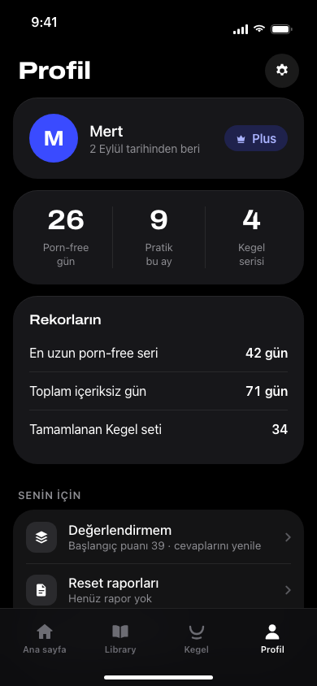
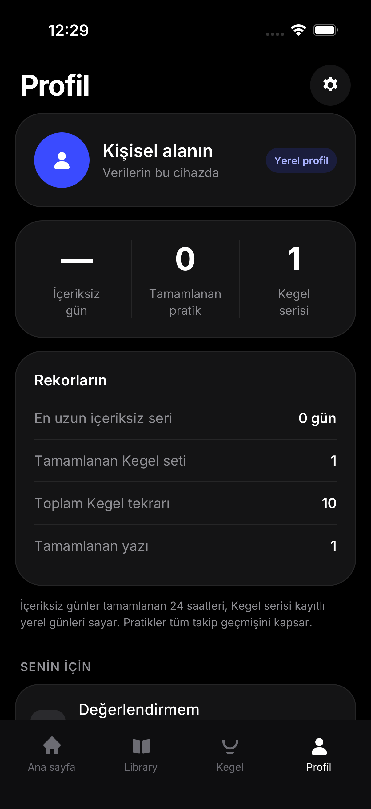
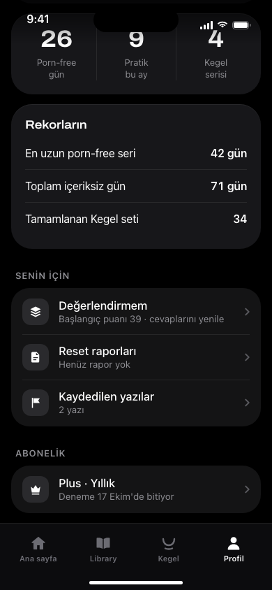
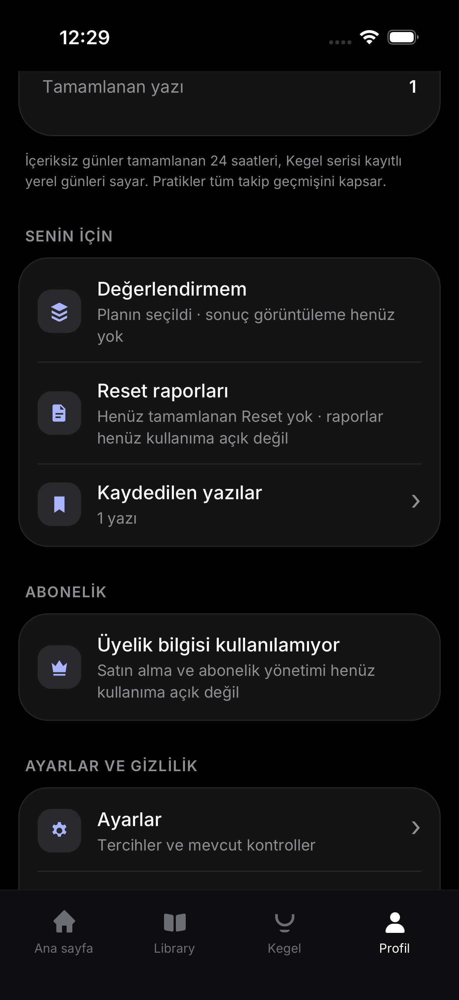
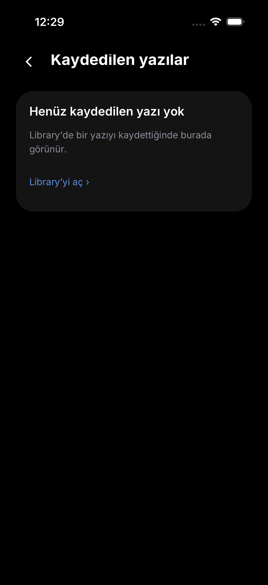
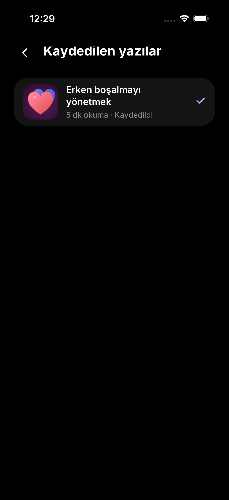
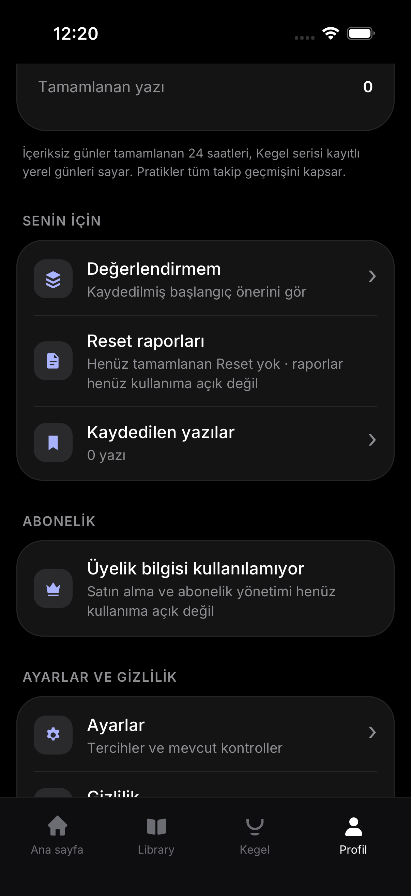
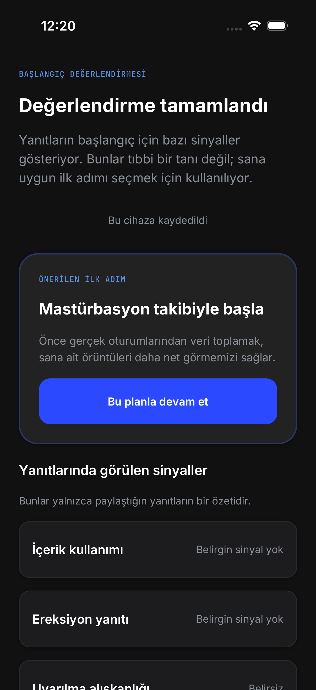
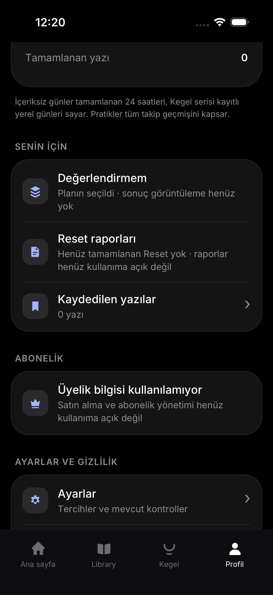
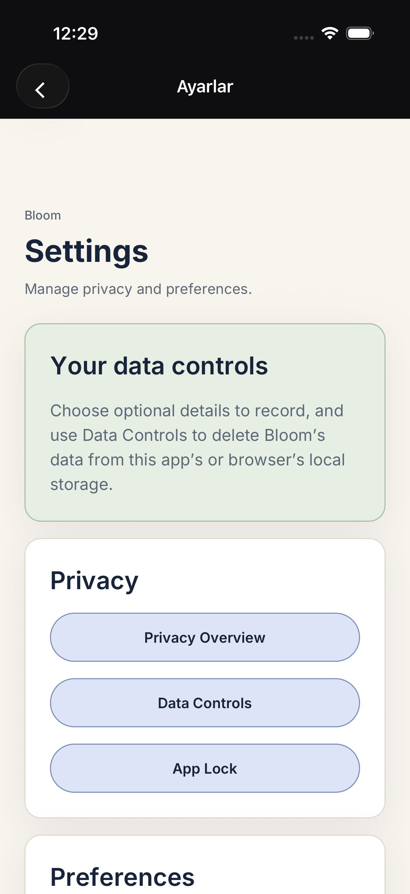
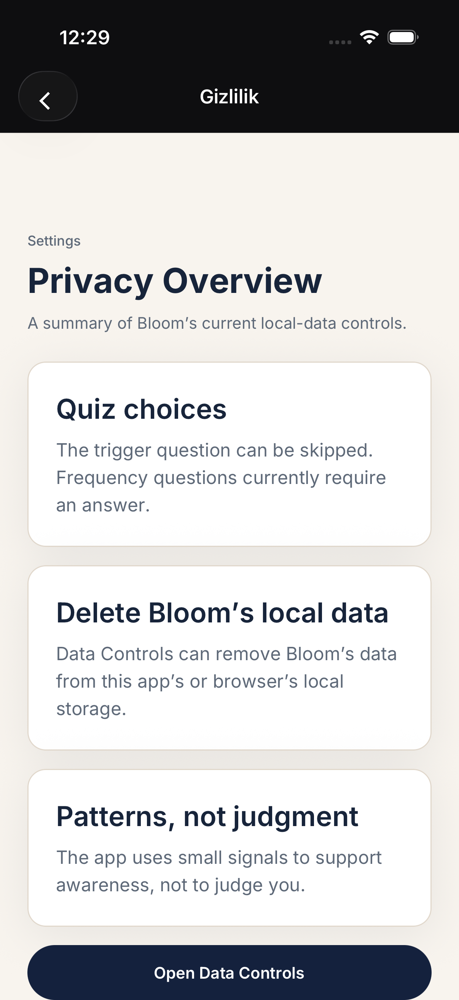
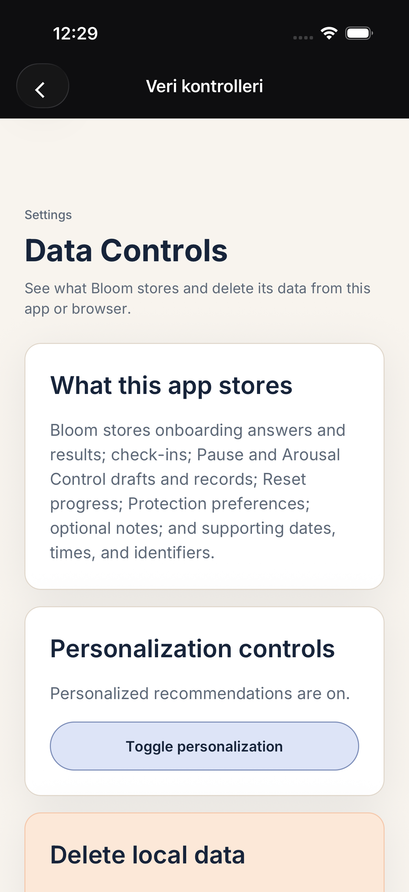
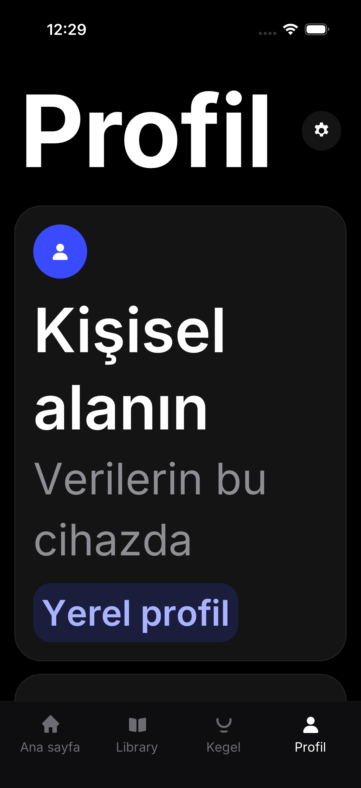
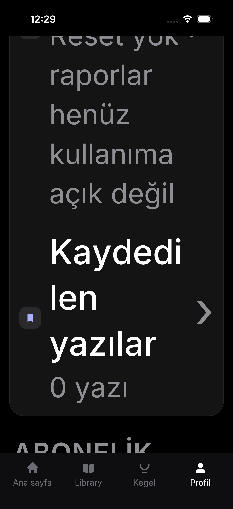
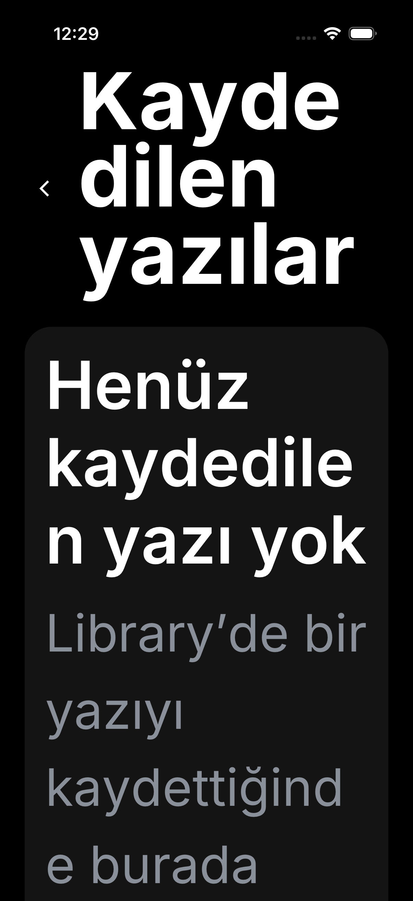